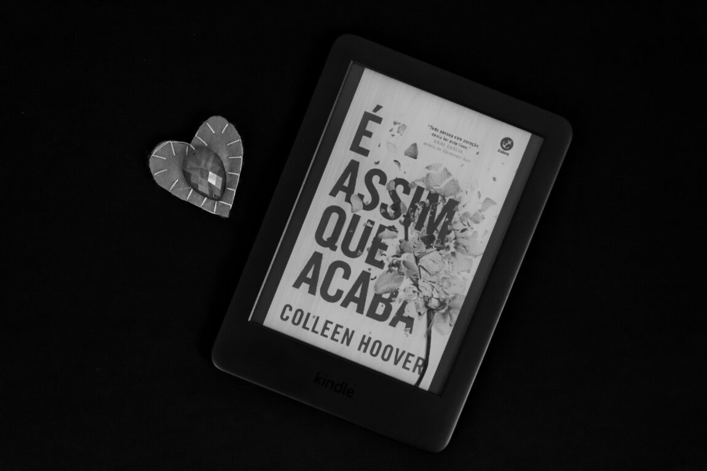
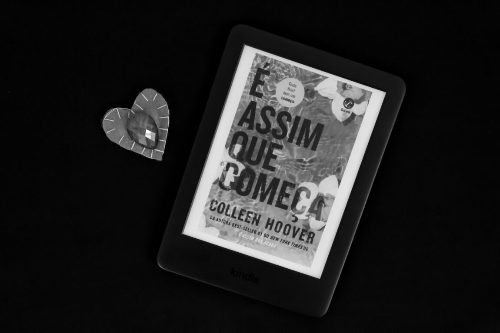
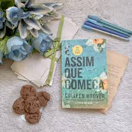

“Todos os seres humanos cometem erros. O que determina o caráter de uma pessoa não são os erros que ela comete, mas como ela transforma esses erros em lições ao invés de dar desculpas.”
“No futuro... se por algum milagre você achar que é capaz de se apaixonar de novo... se apaixone por mim. Você ainda é minha pessoa preferida. E sempre será.”

“Se for preciso um milhão de beijos para ela não pensar nas cicatrizes que cercam sua tatuagem de coração, então vou beijá-la um milhão e uma vezes.”
“Às vezes você vai precisar de mim para segurar sua mão nas colinas, e às vezes eu vou precisar de você para me levar até a montanha, mas tudo, deste ponto em diante, vamos enfrentar juntos.”
 